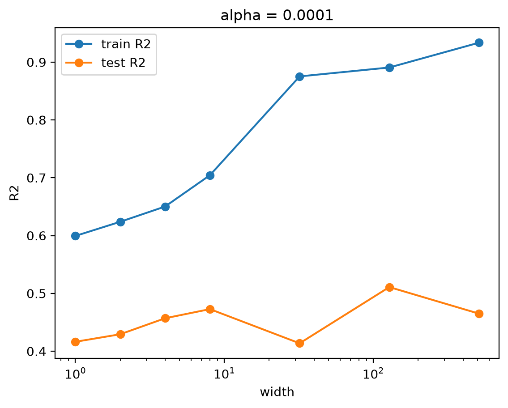

<section id="sweep" style="background:#FFFFFF;color:#2D3340;font-family:'Source Sans 3', Arial, sans-serif;padding:96px 128px;display:flex;flex-direction:row;align-items:center;gap:64px">

<div style="flex:1;display:flex;flex-direction:column;gap:32px">
<h2 style="font-family:'Source Sans 3', Arial, sans-serif;font-weight:700;line-height:1.1;color:#002060;font-size:44px">Wider networks: train R² 0.60 → 0.93, test stays 0.41 – 0.51</h2>
<p style="font-size:32px;line-height:1.4">Two hidden layers of width 1 to 512, trained on 681 chemicals.</p>
</div>
<aside>Ask: what happens to the gap between training and test R² as the network grows? What is it called? Overfitting: the network memorises the training chemicals, noise included. Width 512: train 0.934, test 0.465.</aside>
</section>
